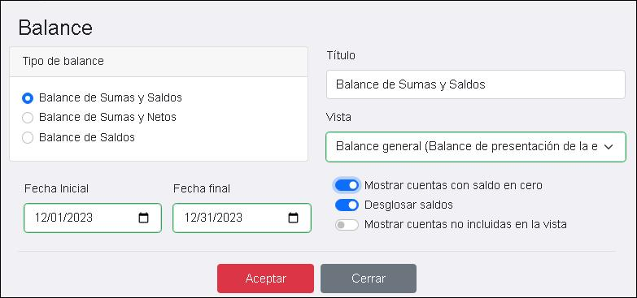

Balances
En esta ventana podés emitir diferentes tipos de balances.
Los tipos de balance que se pueden emitir son:
- Balance de Sumas y Saldos
- Balance de Sumas y Netos
- Balance de Saldos
Exhibe las sumas al debe y al haber del período que indicaste, junto con el saldo total de la cuenta desde el inicio del ejercicio. Ejemplo
Exhibe las sumas al debe y al haber del período que indicaste, junto con la diferencia entre ambos valores. Ejemplo
Exhibe los saldos de las cuentas a la fecha del período que indicaste. Ejemplo
Opciones de emisión
La emisión de balances requiere obligatoriamente indicar una vista, definida previamente.
Al realizar la emisión podes seleccionar:
- Mostrar cuentas con saldo en cero
- Desglosar saldos
- Mostrar cuentas no incluidas en la vista
Tildando esta opción el balance incluye las cuentas con saldo cero.
Esta opción no se encuentra disponible para la emisión del Balance de Saldos.
Esta opción incluye todas las cuentas además de aquellas definidas en la vista.